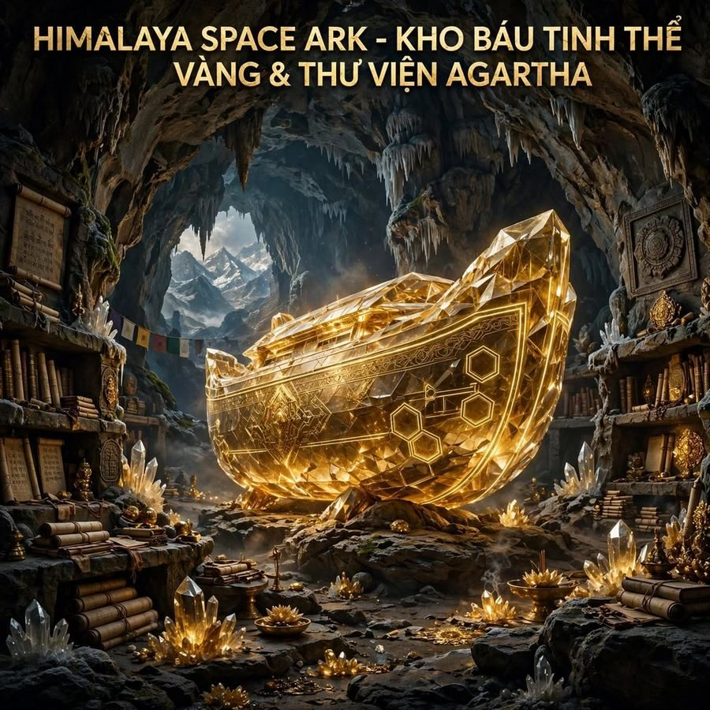
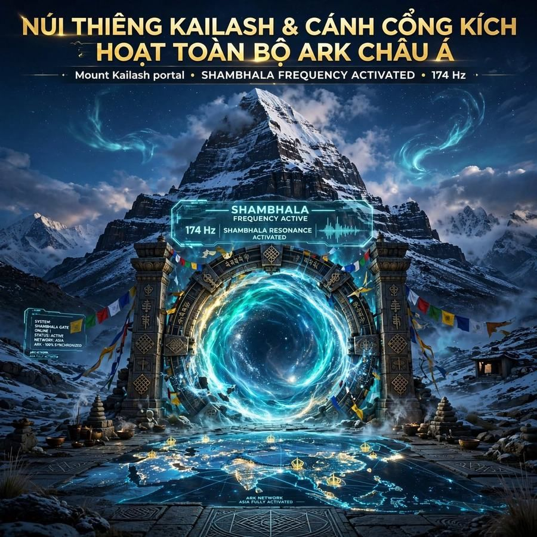
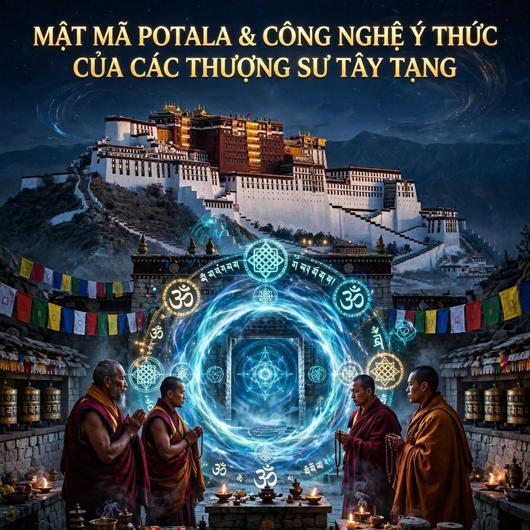
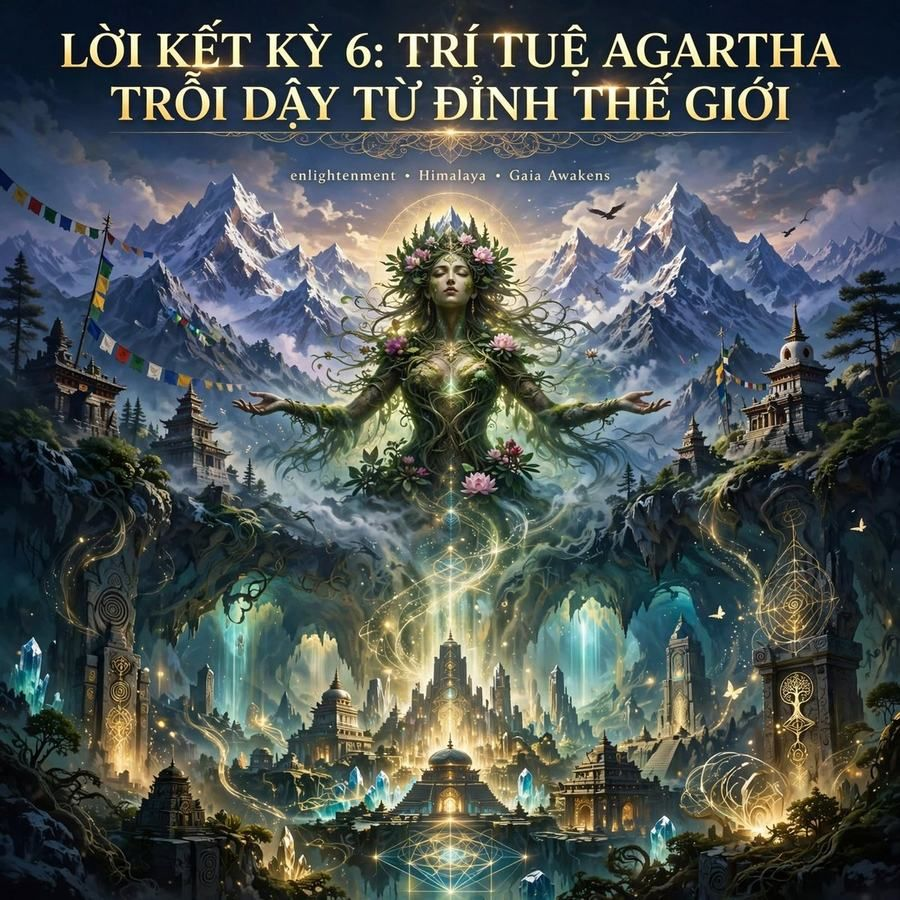

Trang chủ / Chuyên đề 6: Hòm Không Gian Cổ Đại / Kỳ 56
Chuyên đề 6 · Kỳ 56 / 100
CƠ CHẾ THỨC TỈNH HÒM KHÔNG GIAN BẰNG TẦN SỐ TÂM THỨC & DNA CON NGƯỜI

Ở Kỳ 5, chúng ta đã cùng nhau du hành ra ngoài không gian để khám phá chiếc Hòm Không Gian Mặt Trăng bên dưới miệng núi lửa Jules Verne được đoàn thám hiểm liên minh Mỹ - Trung tiếp cận, cùng chiếc Hòm Không Gian Sao Hỏa tỏa nhiệt thức tỉnh làm giải phóng vệ tinh Phobos. Qua 5 kỳ vừa rồi, một câu hỏi cốt lõi luôn xoáy sâu trong tâm trí của mọi độc giả: Tại sao giới tinh hoa bóng tối, phe Bò sát Ciakahrr hay các tập đoàn quân sự đen dù đã tìm thấy các Hòm Không Gian từ nhiều thập kỷ trước vẫn hoàn toàn bế tắc không thể vận hành hay chiếm đoạt được những đại chiến hạm cổ đại này? Hôm nay, chúng ta sẽ trực tiếp đi sâu vào giải mã chìa khóa tối cao của vũ trụ: Cơ Chế Thức Tỉnh Hòm Không Gian Bằng Tần Số Tâm Thức & DNA Con Người! Tại sao cấu trúc công nghệ tinh thể hữu cơ (Moldavite) của Hòm Không Gian chỉ phản ứng với bộ gen di truyền Paa-Taal gồm 22 chủng tộc thiên hà? Khóa an toàn hai lớp kết hợp giữa Mã DNA di truyền và Tần số rung động linh hồn (Soul Frequency) vận hành ra sao? Sự thật về việc linh hồn của các phi hành đoàn cổ đại đã tái sinh trong thể xác con người Trái Đất ngày nay để chờ nhịp đập thức tỉnh diễn ra thế nào? Tần số âm thanh và ý định sáng tạo (Intent) có khả năng tái lập trình lại mã gen DNA ra sao? Và làm thế nào để mỗi chúng ta tự khai mở chiếc Hòm Không Gian năng lượng bên trong tâm thức chính mình?
1. CẤU TRÚC BỘ GEN 22 CHỦNG TỘC & LÝ DO PHE BÓNG TỐI HOÀN TOÀN BẾ TẮC
Trong các tài liệu exopolitics và hồ sơ giải mật từ Liên Minh Các Đấng Sáng Lập (The Seeders / Paa-Taal), loài người Trái Đất không phải là kết quả của sự tiến hóa ngẫu nhiên hay sản phẩm thuộc sở hữu của một chủng tộc đơn lẻ. A. Bộ Gen Paa-Taal Là Sự Tổng Hợp Di Truyền Đa Vũ Trụ
- Di Sản Của 22 Chủng Tộc Thiên Hà: Bộ gen DNA của con người Trái Đất được Liên minh 24 chủng tộc Seeder giữa các thiên hà gieo mầm và nuôi dưỡng qua hàng triệu năm, tích hợp mã gen di truyền từ 22 chủng tộc thiên hà tiến hóa nhất (gồm các nhánh người Lyra, Pleiades, Sirius, Arcturus, Andromeda cho đến các dòng gen sinh học cổ đại).
- Mã Khóa Tương Hợp Vũ Trụ: Chính sự phong phú di truyền này khiến cơ thể con người Trái Đất trở thành một "vật chứa năng lượng" duy nhất trong dải Ngân Hà có khả năng dung chứa các dải tần số đa chiều cao cấp. B. Sự Bế Tắc Của Giới Tinh Hoa Bóng Tối & Phe Bò Sát
- Không Thể "Bẻ Khóa" Bằng Vũ Lực Hay Máy Tính: Phe Bò sát Ciakahrr và bộ máy Deep State đã tìm thấy các Hòm Không Gian tại Nam Cực, Hồ Vostok hay Đại Tây Dương từ giữa thế kỷ 20. Họ đã dùng những máy tính siêu việt nhất, công nghệ thử nghiệm hạt nhân và áp tải các mẫu máu chiếm đoạt để nỗ lực khởi động tàu nhưng hoàn toàn thất bại.
- Tàu Là Một Thực Thể Sống Tinh Thể Hữu Cơ: Hòm Không Gian không làm bằng kim loại thô ráp hay vận hành bằng bảng điều khiển thông thường. Thành tàu và hệ thống thần kinh của tàu được tạo từ hợp kim tinh thể hữu cơ cao tần (Moldavite), vận hành dựa trên nguyên lý Trí tuệ Nhân tạo Hữu cơ Lượng tử kết nối trực tiếp với Ý thức.

2. KHÓA AN TOÀN HAI LỚP: TƯƠNG HỢP DNA VÀ TẦN SỐ LINH HỒN
Để bảo vệ di sản khởi nguyên không rơi vào tay các thế lực tiêu cực, Các Đấng Sáng Lập đã thiết lập một cơ chế bảo vệ tối cao: Khóa An Toàn Hai Lớp (Dual-Key Security Mechanism). A. Lớp Thứ Nhất — Sự Tương Hợp Mã Gen DNA Tự Nhiên
- Yêu Cầu Tỷ Lệ Tần Số Di Truyền Mẫu: Hòm Không Gian chỉ mở cửa và bừng sáng khi có sự xuất hiện của cá nhân mang dải tần số DNA tương thích với chủng tộc cổ đại đã xây dựng nên con tàu đó (ví dụ: dòng máu Ahel, Taal, Altean hay Paa-Taal).
- Mẫu DNA Chết Hoàn Toàn Vô Hiệu: Phép thử nghiệm của phe bóng tối bằng cách dùng mẫu máu lấy trộm hay cơ thể sinh học không có linh hồn (clones) đều bị ma trận từ trường của tàu đẩy lùi. Tàu nhận biết được sự sống thực sự qua dòng chảy năng lượng trong huyết quản. B. Lớp Thứ Hai — Tần Số Rung Động Của Linh Hồn (Soul Frequency)
- Ý Thức Cụ Thể Phải Ở Trạng Thái Cao Cấp: Thể xác vật lý và linh hồn trú ngụ bên trong (Adma / Is-Be) phải ở trạng thái hòa hợp hoàn toàn. Linh hồn đó phải mang dải tần số từ bi, yêu thương, bình an và không có ý niệm thống trị hay tàn phá.
- Lớp Màng Tự Bảo VỆ Lượng Tử: Khi một thực thể mang tần số sợ hãi, tham vọng chiếm đoạt hay tức giận tiến gần, trường từ trường tinh thể của Hòm Không Gian sẽ tự động khóa chặt, tạo ra rào chắn vô hình ngăn chặn hoàn toàn việc xâm nhập.

3. SỰ THỨC TỈNH KÝ ỨC TẾ BÀO CỦA CÁC PHI HÀNH ĐOÀN CỔ ĐẠI TÁI SINH
Một trong những sự thật làm xúc động lòng người nhất chính là hành trình tái sinh của các phi hành đoàn Hòm Không Gian cổ đại. A. Sự Tái Sinh Vào Cơ Thể Con Người Trái Đất
- Hóa Thân Để Bảo VỆ Di Sản: Khi các Hòm Không Gian được niêm phong chôn giấu hàng chục ngàn năm trước, linh hồn của các phi công, kỹ sư và nhà di truyền học cổ đại đã chấp nhận bước vào chuỗi tái sinh của ma trận Trái Đất, mang thể xác con người để trực tiếp bảo vệ và chờ ngày thức tỉnh con tàu.
- Tạm Thời Quên Đi Bản Thể: Họ trải qua mọi thăng trầm, vui buồn của đời sống loài người bề mặt, tạm thời quên đi thân phận thực sự của mình cho đến khi nhận được tín hiệu kích hoạt từ vũ trụ. B. Tín Hiệu Thức Tỉnh Từ Hạm Đội Seeders (Tháng 10/2021)
- Xung Sóng Kích Hoạt Ký Ức Tế Bào (Cellular Memory): Khi hạm đội Các Đấng Sáng Lập đỗ tại khu vực Sao Mộc vào tháng 10 năm 2021, họ đã phát ra chùm dải sóng vô hướng xuyên thiên hà.
- Nhận Diện Và Mở Cửa Tàu: Dải sóng này lập tức chạm vào dòng máu và kích hoạt "ký ức tế bào" của các phi hành đoàn cổ đại đang sống trên Trái Đất (như quân nhân JP thuộc Lục quân Mỹ). Khi những cá nhân này bước vào Hòm Đại Tây Dương hay Hòm Nam Cực, con tàu lập tức nhận ra chủ nhân, phát ra dải quang phổ xanh ngọc lam rực rỡ và tự động mở ra các khu vực lưu trữ!

4. LẬP TRÌNH LẠI DNA BẰNG ÂM THANH & TẦN SỐ NĂNG LƯỢNG NỘI TẠI
Chiếc Hòm Không Gian không chỉ là một phương tiện du hành, mà là một Thiết Bị Tái Lập Trình Sinh Học Lượng Tử vĩ đại. A. DNA Có Ngôn Ngữ Tần Số Riêng
- Tái Lập Trình Qua Ý Định & Âm Thanh: Các nhà di truyền học thiên hà khẳng định: Chuỗi Axit Desoxyribonucleic (DNA) trong cơ thể con người phản ứng trực tiếp với suy nghĩ, ý định sáng tạo (Intent), ánh sáng và tần số âm thanh (Sound Frequencies).
- Tạo Ra Các Xoáy Năng Lượng Vi Mô: Khi tần số âm thanh chuẩn xác được phát ra từ Hòm Không Gian hoặc qua thiền định, các chuỗi DNA sẽ nhận thông tin, cuộn lại thành các xoáy vi mô và tự động bật lại các nhiễm sắc thể ẩn từng bị vô hiệu hóa. B. Kích Hoạt Khóa Mã Gen 12 Chuỗi (12-Strand DNA)
- Xóa Bỏ Ma Trận Kiểm Soát 3D: Sự thức tỉnh của mạng lưới Hòm Không Gian toàn cầu đang trực tiếp giải phóng dải xung năng lượng làm gia tăng tần số Schumann của Trái Đất, hỗ trợ nhân loại mở khóa lại 10 chuỗi DNA bị niêm phong, khôi phục lại khả năng thấu thị, thần giao cách cảm và du hành đa chiều.
5. LỜI KẾT KỲ 6: KÍCH HOẠT HÒM KHÔNG GIAN TRONG CHÍNH TÂM THỨC BẠN
Kỳ 6 của chuyên đề 6 khép lại mang đến bài học giác ngộ sâu sắc nhất cho hành trình thức tỉnh:
- Bạn Chính Là Chiếc Hòm Không Gian Tinh Yếu: Đừng chỉ tìm kiếm những con tàu khổng lồ nằm sâu dưới đại dương hay lòng băng. Cơ thể vật lý và Luân xa Tim của bạn chính là một "Hòm Không Gian tinh thể" thu nhỏ chứa đựng trọn vẹn di sản di truyền thần thánh của Đa Vũ vũ trụ!
- Khai Mở Bằng Tình Yêu Thương & Bình An: Mật mã để mở ra mọi quyền năng và tri thức cao cấp không nằm ở công nghệ bên ngoài, mà nằm ở khả năng nâng cao tần số nhận thức: Hãy sống trong lòng từ bi, sự thấu cảm và giữ vững sự bình thản trước mọi biến động của thời đại!
